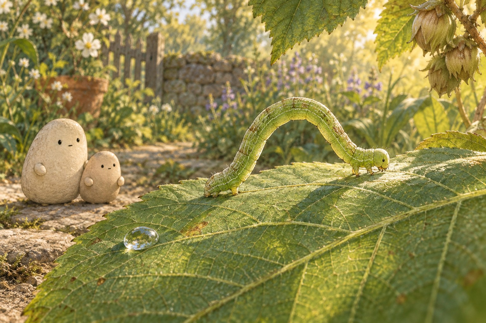
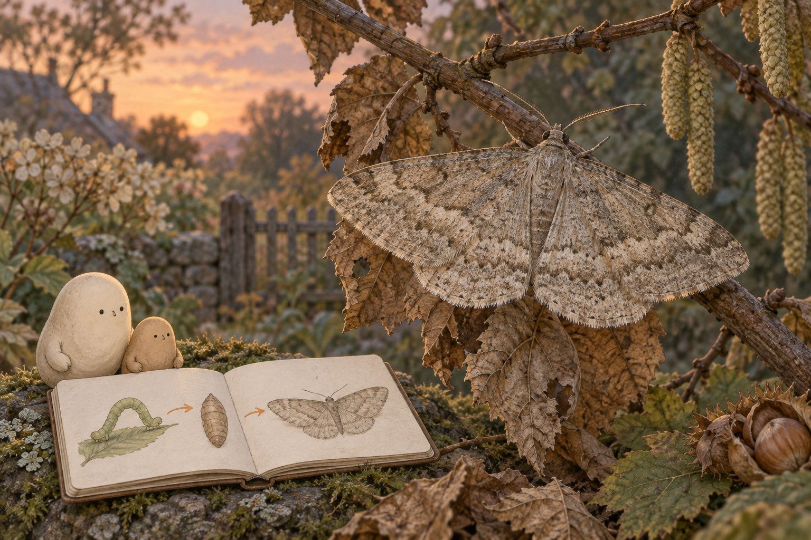

A loop goes somewhere
A loop goes somewhere. · Curiosity day

Little spots a green arch on the leaf. “A tiny bridge!” The arch flattens, and a small head reaches past a vein. Big watches from the path. Bending is how this caterpillar starts a trip across the same leaf vein.

Front grips hold the leaf. The rear slides closer and the long middle lifts into a tall loop. Soft grips near the rear are prolegs — fleshy holders, not jointed walking legs. “No walking legs under that middle,” Little says.

The prolegs anchor the rear: they hold it in place. The front stretches ahead as the body straightens. When the front grips again, the rear can follow. One end holds; the other moves. Loop by loop, the leaf gets shorter.

Little draws the head before a vein fork, then after it on the same leaf vein. The two marks are evidence — clues that can support an idea. “It passed the fork!” That idea is an inference: an idea drawn from evidence.

“Does every loop go one inch?” Little asks. The name sounds like a ruler, but real steps vary. So Little invents a pretend route with made-up distances. A model can answer a math question without turning the picture into a measuring stick.

Little imagines later chapters. The caterpillar becomes a pupa, then a moth. That change of body form is metamorphosis, and it takes time. “A new shape after all those loops,” Little grins.
Think about it: What evidence shows the head traveled rather than only bending in place? Why compare it with the same vein fork? During the reach, what anchors the rear? Predict what could happen if that grip slipped, and explain why.